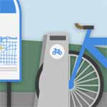
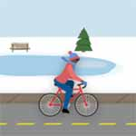

{
"UUID": "7d3f0f9d-6661-4788-bfd0-b59600404ede",
"Title": "Bay Area Climate Change Council",
"ShortDescription": "Graphic design and assets for a non-profit",
"Year": 2021,
"FeaturedWork": "FALSE",
"URL": "bay-area-climate-change-council",
"Modality": [
"Digital"
],
"Medium": [
"Graphic design"
],
"Tools": [
"Figma",
"Illustrator",
"Photoshop"
],
"Object": [
"Digital assets"
],
"Collaborators": [
"Bay Area Climate Change Council"
],
"Keywords": [
"Commercial/client",
"Culture",
"Non-governmental",
"Sustainability"
]
}Creating design resources, assets and iconography for reports and social media usage.
| * | Title | Size (bytes) | View |
|---|---|---|---|
 | Bike share | 220,403 | |
| Hamilton Go-train | 52,807 | ||
| Full scene | 142,586 | ||
 | Winter bike | 266,166 | |
| Walk to school | 129,323 | ||
| Hamilton bus | 90,325 |